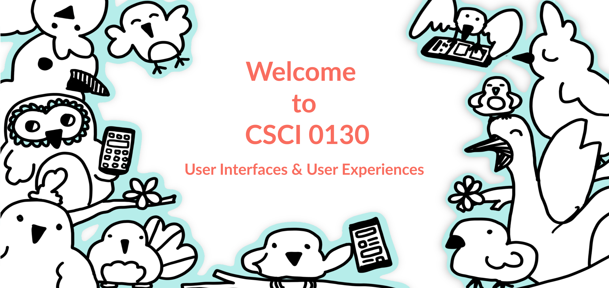
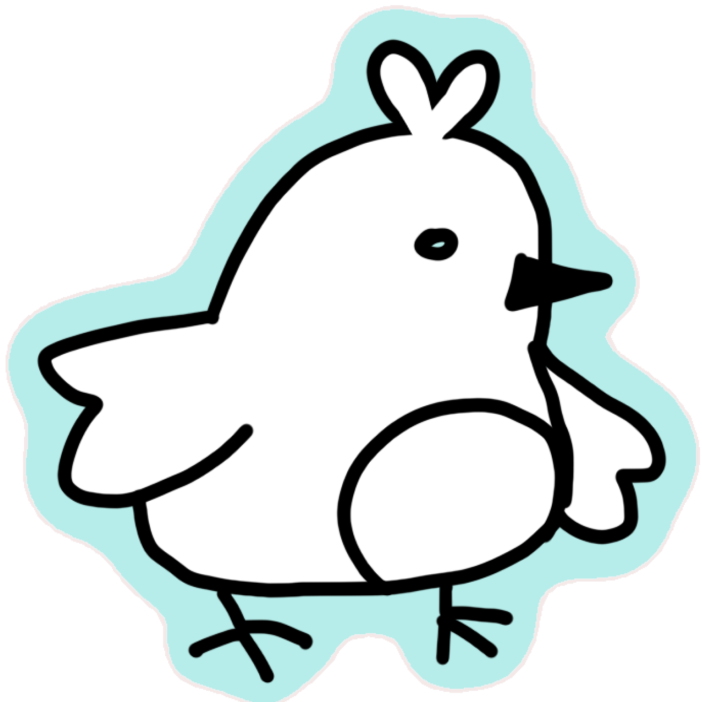
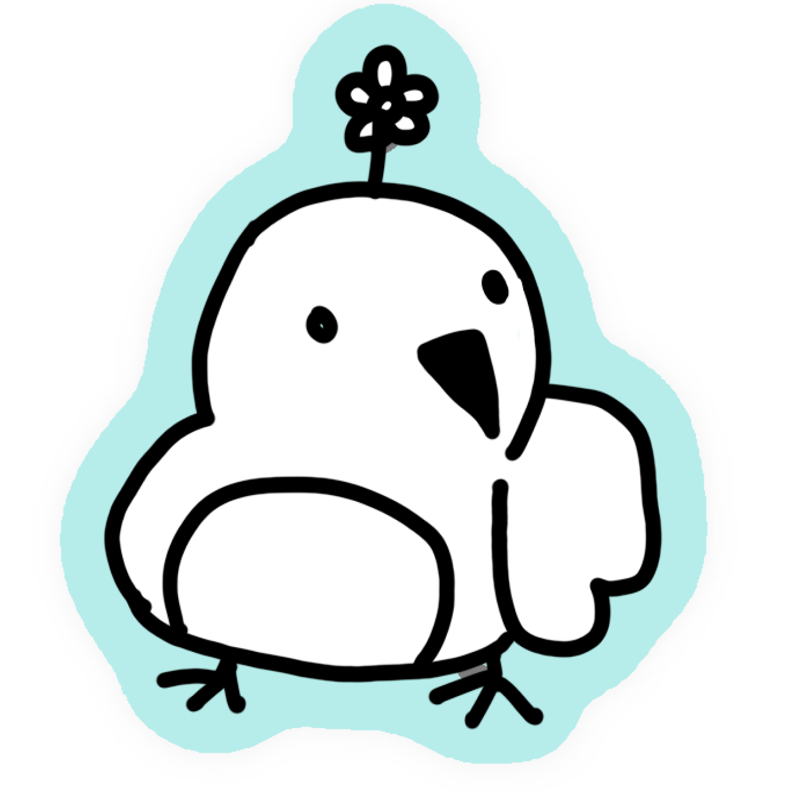

Helpful Links
Course Schedule
FAQ
Do I need to wear a mask in class?
Yes. Everyone should be wearing a mask in class.Is this class capped?
Yes the class is capped to 20 students. Override codes will be distributed in the first week of class.How can I get into this course? Is there a waitlist?
Come to the first day of class! You will learn more there :)I might miss some of the classes, can I be excused?
This course is very dependent on in-class activities, so we strongly suggest you attend every class you can in person. However, if you must miss class please email Talie [talie_massachi (at) brown.edu] ahead of time so we can set something up for you. You will lose points for any unexcused absences (just make sure to email me!)Who can take CS0130?
As long as you are an undergraduate student enrolled at either Brown or RISD you are welcome to take CS0130! Unfortunately graduate students cannot enroll in the course. There is also a cap of 20 students. Override codes will be distributed during the first week of class.Will there be lecture recordings?
Sorry, there wont be!Will there be a textbook?
No textbook! All readings and resources will be provided to you by me :)Is there a final exam?
While there is no final exam, there is a final project and a portfolio project. You will learn about both well in advance of the course and both will be due on May 9th! (We need the time after May 9th to grade your projects in time)What’s the difference between this and CSCI 1300?
This course and CSCI 1300 cover many of the same topics. However while this course focuses a bit more on hands-on design practice, CSCI 1300 includes programming practice and frontend development practice that we will not see in 0130.Instructors

Hi I'm Talie, I'm a fourth year PhD Candidate working with Prof. Jeff Huang. In my free time I like to watch cooking shows and play board games. Looking forward to working with you all this semester!

Caitlin Rowlings
Head TA
Head TA
Hello! I'm Caitlin, a junior studying Cognitive Science from California. I love reading & art, most things outdoors, and am on the club tennis team here at Brown!

Illustrations by Caitlin Rowlings
Return to talie.town
Return to talie.town